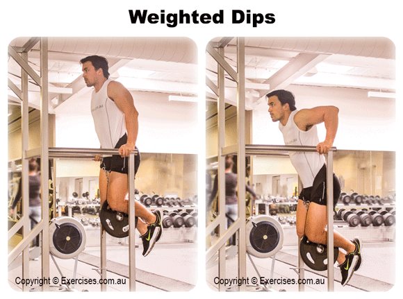
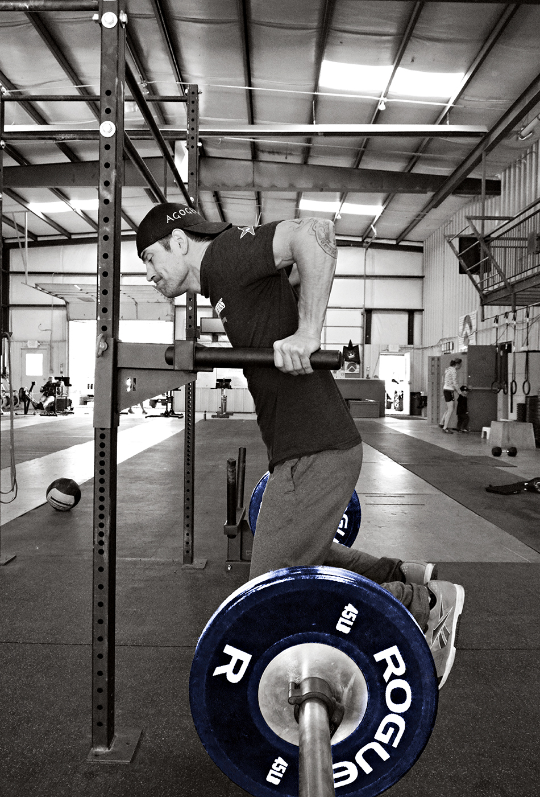

A dip is an upper-body strength exercise. Narrow, shoulder-width dips mainly trains the triceps,
with major synergists being the anterior deltoid, the pectoralis muscles, and the rhomboid muscles of the back.
Dips help strengthen the muscles in your: chest, shoulders, triceps, upper back, and lower back. When done correctly, weighted dips can add muscle mass to your upper body.
This exercise can also help build your strength for other exercises like bench presses.


Weighted dips are an advanced variation of the chest dip exercise that works your triceps, chest, shoulders, and arm muscles.
To perform them, you add extra weight during the exercise by:
1. wearing a dip belt with weights attached to it
2. wearing a weighted vest or a heavy backpack
3. holding a dumbbell between your ankles
---Weighted dips should only be performed if you already have good upper body strength.
If you’re new to weighted dips, try doing regular chest dips first to get the move down and build your strength.
HOW TO DO WEIGHTED DIPS:
1. Start by wrapping your dip belt around your waist, chain side in front. Take the chain end with the carabiner on it and drop it through the belt loop so the belt can tighten.
Attach your weight plate to the dropped side before looping it around, and clip it back to the other side of your belt.
2. Mount the dip bar facing outward. Hold onto the bars as you hold your body at arm’s length — arms and elbows straight and locked.
Keep your head in line with your trunk, wrists in line with your forearms.
3. Inhale as you slowly start to lower your body. Let your torso move slightly forward and your elbows to flare out to the side.
4. Once you feel a stretch in your chest, breathe out and start to push yourself slowly back up to the starting position.
5. Repeat the movement.